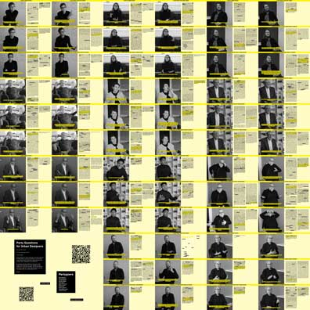
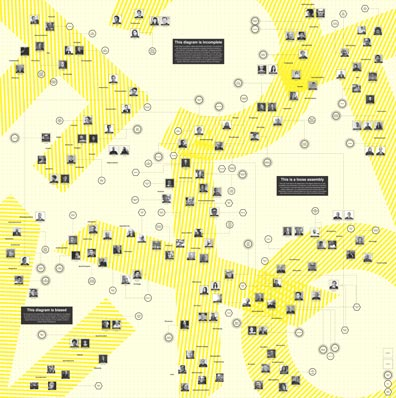

About
Context/Content is an exploration into alternative modes of practice as a way to discern and articulate our own unique position among urban agents. The project emerged from a broader ambition to not only advance the role of urban discourse in Taubman College, but speculate on how contemporary urban practice can critically engage with notions of context and content by engaging in a multitude of formats. Through digital, physical, and social media content, we are framing a momentary assemblage of our perspectives and experiences of urban discourse to bring multiple contexts, contents, and their interrelationships to the fore. This project is a catalyst for further investigation and the development of a new type of urban practice. Stay tuned.
Syllabi
After three semesters of drinking from the proverbial fire hose, we wanted to take a stab at answering the question, “What is urban design? What are urban designers learning about urban design?” This project takes received and recurrent themes from our urban design curricula and re-presents them for critical contemplation. Are the re-presentations unfair? Are they on the nose?
[Read More]Library
The Library is a curation of seminal publications on urban design that we’ve come across in our studies. The Library falls somewhere between canon and moodboard, didactic reading list and Now That’s What I Call Music. Sneak a peek, give it a close read, sniff the pages, or don’t. Just return the damn books on time.
Party Questions
So, what do you do? Oh, I’ve never heard of that. Is that a thing? Urban design is ubiquitous yet obscure, old enough to draw social security yet still nebulous. After our own myriad experiences fielding party questions about urban design, speaking to urban design at large, and sometimes bungling through giving an answer, we thought we’d see how the faculty would respond to the party context. Party Questions for Urban Designers casually asks for compelling answers about how the urban design faculty at Taubman College describe their practice, peers, pedagogies, and predictions, using the obnoxious yet obligatory party question. By simultaneously presenting the responses of the faculty, Party Questions for Urban Designers invites audiences to catch the one-liners, dig into the full story, chat up the characters, avoid said characters, suss out the program vibe, or... go get another drink.
[Read More]Meta-Context
In an attempt to map the discursive ecologies that have had a significant impact on our work, three themes emerged through the assemblage of this diagram: This diagram is incomplete. This is a loose assembly. This diagram is biased. It wasn’t long after we set forth on this effort before we realized the futility in trying to make sense of the urban milieu. The reality is that urban design benefits from a plurality of voices, which is simultaneously its strength and weakness. Its elasticity provides us the freedom to engage in various forms of scales and contexts, but its ambiguity also diffuses its recognition as a discipline. Whether or not urban design will achieve disciplinary clarity or remain in this sort of purgatorial state is yet to be determined.
Microurbanism
[download the the 6ft x 6ft contents of our exhibition] The microurbanism appropriates the stuff of urbanity to frame urban discourse at Taubman College. We’re serious about it. We swear. But don’t take our word for it, take Cyrus Penarroyo’s: “Are we there yet? Here we see a momentary assemblage of content, from pixelated geographies and discursive ecologies to mediated spaces and urban meditations. Led by young designers and committed urbanists, this work is motivated by a clear, yet complicated question: ‘What matters to urban design?’ To arrive at some answers, they navigated the incredibly complex ways that urban design could engage a multitude of social, political, and environmental concerns. Many voices contributed to the conversation, and it became clear that there are plenty of paths to understanding what exactly “matters.” They raise critical questions (suspended from wire) and put important issues on the table(s that swivel). Moving between scales and formats, they initiate novel relationships between bodies and the environments that they inhabit. Ultimately, in order for us to make sense of all this content, they’ve framed it within an alternative context, a new “there” for here right now...”